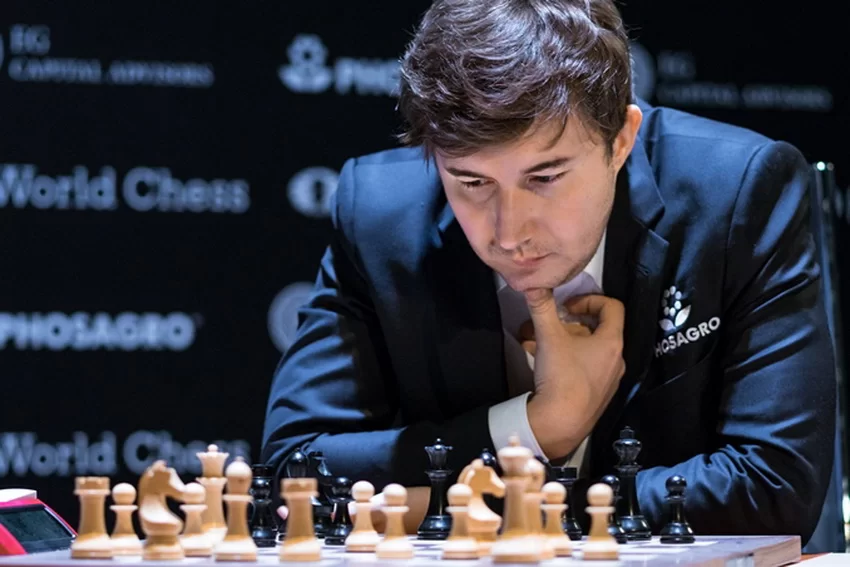

Top 10 mejores jugadres en la actualidad (12-2024)
| Jugador | Imagen | ELO |
|---|---|---|
| Magnus Carlsen, cuyo nombre completo es Sven Magnus Øen Carlsen, es un gran maestro de ajedrez noruego, ampliamente reconocido como uno de los mejores jugadores de ajedrez de todos los tiempos. Nació el 30 de noviembre de 1990 en Tønsberg, Noruega. Carlsen se convirtió en Gran Maestro en 2004, a la edad de 13 años, lo que lo colocó entre los prodigios más jóvenes de la historia del ajedrez. | 2831 | |
| Fabiano Luigi Caruana es un reconocido gran maestro de
ajedrez, nacido el 30 de julio de 1992 en Miami,
Florida, Estados Unidos, aunque sus raíces familiares
son italianas. Desde muy joven, mostró un talento
extraordinario para el ajedrez, lo que lo llevó a
convertirse en uno de los mejores jugadores del mundo.
Es una figura emblemática tanto para Estados Unidos
como para Italia, países que ha representado en
distintas etapas de su carrera. Además, es una figura central en el ajedrez contemporáneo. Su combinación de talento, dedicación y profesionalismo continúa marcando la historia del ajedrez. |
2805 | |
| Hikaru Nakamura, nacido el 9 de diciembre de 1987 en
Hirakata, Japón, es uno de los grandes maestros del
ajedrez más destacados y populares de la actualidad.
Aunque nació en Japón, se trasladó a los Estados
Unidos a una edad temprana y ha representado a este
país desde entonces. Nakamura es conocido tanto por
su excepcional habilidad en el tablero como por su
carismática personalidad fuera de él, siendo una
figura clave en la popularización del ajedrez en
plataformas digitales. es una figura cultural que ha llevado el ajedrez a audiencias masivas, especialmente a través de internet. Su contribución al ajedrez moderno trasciende sus logros competitivos, ya que ha inspirado a millones a explorar este juego milenario. |
2802 | |
| Arjun Erigaisi es un gran maestro de ajedrez de la
India, nacido el 3 de septiembre de 2003 en Warangal,
Telangana. Es conocido por su rápido ascenso en el
mundo del ajedrez, consolidándose como una de las
jóvenes promesas más destacadas de este deporte.
Obtuvo el título de Gran Maestro en 2018, a la edad
de 14 años, convirtiéndose en el 32º Gran Maestro
de la India Arjun mantiene un perfil bajo fuera del tablero. Dedica gran parte de su tiempo al entrenamiento y es conocido por su humildad y enfoque disciplinado hacia el ajedrez. | 2801 | |
| Gukesh Dommaraju, conocido popularmente como Gukesh D,
es un prodigio del ajedrez y gran maestro indio,
nacido el 29 de mayo de 2006 en Chennai, India. Es uno
de los talentos más prometedores del ajedrez mundial y
uno de los jugadores más jóvenes en alcanzar el
prestigioso título de Gran Maestro. Obtuvo el título de Gran Maestro en enero de 2019, convirtiéndose en el segundo jugador más joven en la historia del ajedrez en alcanzar este título (solo superado por Sergey Karjakin). Logró este hito a los 12 años, 7 meses y 17 días. A pesar de su éxito temprano, es conocido por su humildad y su actitud trabajadora. |
2783 | |
| Nodirbek Abdusattorov es un talentoso Gran Maestro de
ajedrez nacido el 18 de septiembre de 2004 en Tashkent,
Uzbekistán. Se le reconoce como una de las estrellas
emergentes más prometedoras del ajedrez mundial, habiendo
demostrado desde joven una habilidad extraordinaria para
competir al más alto nivel. Es el actual líder de una
nueva generación de prodigios que están marcando el
panorama global del ajedrez. Obtuvo el título de Gran Maestro en abril de 2018, a los 13 años y 1 mes. comenzó a jugar ajedrez a los 6 años, mostrando un talento extraordinario desde muy temprano. Es conocido por su ética de trabajo y dedicación al deporte, lo que lo ha ayudado a escalar rápidamente en el mundo del ajedrez competitivo. |
2777 | |
| Alireza Firouzja es un prodigio del ajedrez
iraní-francés y uno de los jugadores más destacados
de la nueva generación. Nació el 18 de junio de 2003
en Babol, Irán, y es conocido por su estilo de juego
dinámico, su meteórico ascenso en el ranking mundial
y su habilidad para enfrentarse a los mejores
jugadores del mundo. Obtuvo el título de Gran Maestro en 2018, a los 14 años y 2 meses. Tiene un estilo agresivo, creativo y dinámico, lo que lo ha llevado a ser comparado con leyendas como Bobby Fischer y Garry Kasparov. Es especialmente hábil en posiciones tácticas complicadas, donde su capacidad para encontrar jugadas inesperadas y soluciones brillantes lo distingue de otros jugadores. |
 |
2763 |
| Ian Nepomniachtchi, conocido como Nepo, es un Gran
Maestro ruso de ajedrez nacido el 14 de julio de 1990
en Briansk, Rusia. Es reconocido por su estilo de
juego dinámico y su rapidez en el cálculo táctico. Ian
ha sido uno de los principales contendientes en la
élite del ajedrez mundial y es especialmente conocido
por ser el retador al Campeonato Mundial de Ajedrez en
2021 y 2023. Obtuvo el título de Gran Maestro a los 17 años, tras mostrar un desempeño sobresaliente en torneos juveniles y nacionales. Desde entonces, ha sido un jugador constante en el circuito de élite. Tiene un historial favorable en sus enfrentamientos contra Magnus Carlsen en partidas rápidas y clásicas, algo poco común entre los jugadores de la élite. |
2755 | |
| Wei Yi es un Gran Maestro chino de ajedrez, nacido el
2 de junio de 1999 en Yancheng, Jiangsu, China. Es
conocido como uno de los mayores prodigios del ajedrez
en la historia moderna. Wei Yi se destacó desde una edad
muy temprana por su increíble capacidad táctica y su
creatividad en el tablero, y ha sido considerado un
posible futuro campeón mundial. Obtuvo el título de Gran Maestro a los 13 años, 8 meses y 23 días, convirtiéndose en el quinto Gran Maestro más joven de la historia en ese momento. Es conocido por su carácter tranquilo y reservado. Comenzó a jugar ajedrez a los 6 años y desde entonces ha dedicado gran parte de su vida a perfeccionar su juego. Además de su talento en el ajedrez, es un ávido lector y mantiene un enfoque disciplinado tanto dentro como fuera del tablero. |
2753 | |
| Sergey Karjakin es un Gran Maestro de ajedrez nacido
el 12 de enero de 1990 en Simferópol, Crimea
(entonces parte de Ucrania). Es conocido por ser el
Gran Maestro más joven de la historia, un logro que
alcanzó a los 12 años y 7 meses, y por su histórica
participación como retador al Campeonato Mundial de
Ajedrez en 2016 contra Magnus Carlsen. Karjakin es
considerado uno de los jugadores más talentosos y
sólidos de su generación, reconocido por su habilidad
defensiva y su resistencia bajo presión. Obtuvo este récord al conseguir el título a los 12 años y 7 meses, un hito que aún permanece vigente. Karjakin es también un excelente jugador de blitz y rápido. Ha competido en numerosos eventos online y en vivo, mostrando su rapidez de cálculo y reflejos en las modalidades más veloces del ajedrez. |
 | 2750 |